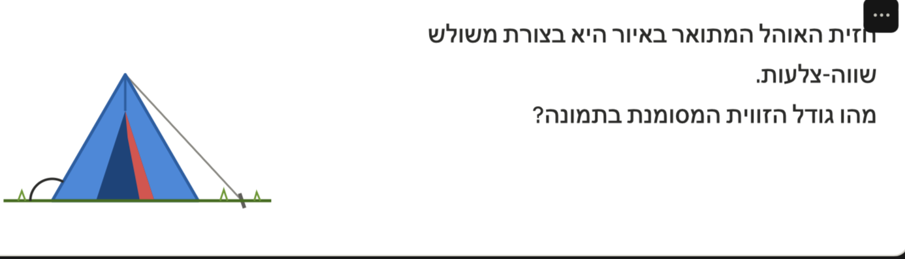
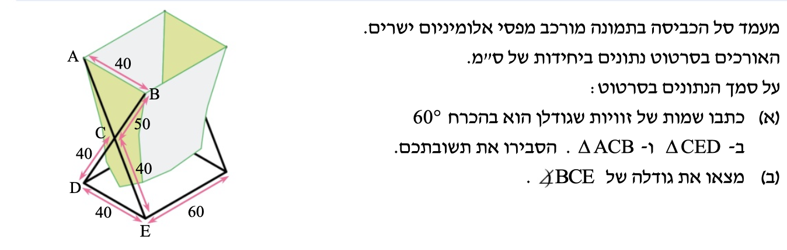

שאלה 1

חזית האוהל המתואר באיור היא בצורת משולש שווה-צלעות.
מהו גודל הזווית המסומנת בתמונה?
שאלה 2 — מעמד כביסה

מעמד סל הכביסה בתמונה מורכב מפסי אלומיניום ישרים. האורכים נתונים בסרטוט (ס"מ).
(א) כתבו שמות של זוויות שגודלן הוא בהכרח 60° ב-△CED וב-△ACB, והסבירו:
(ב) מצאו את גודלה של ∠BCE: